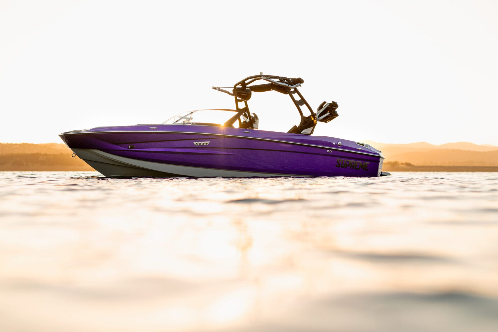
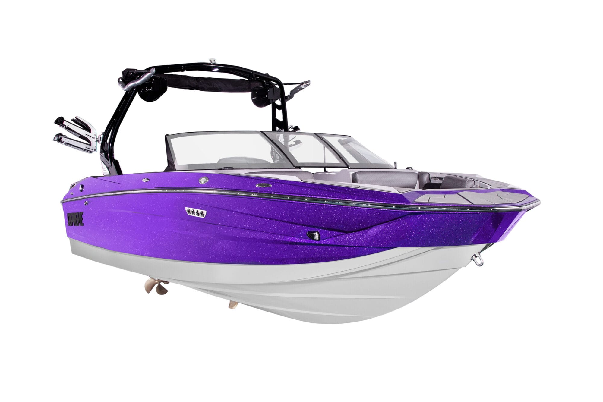
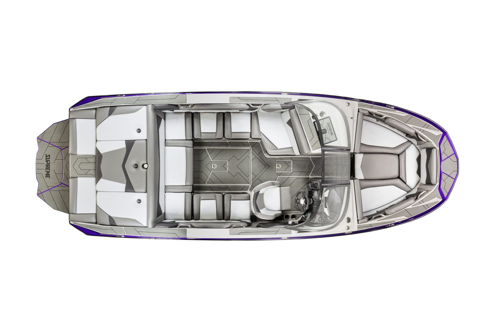
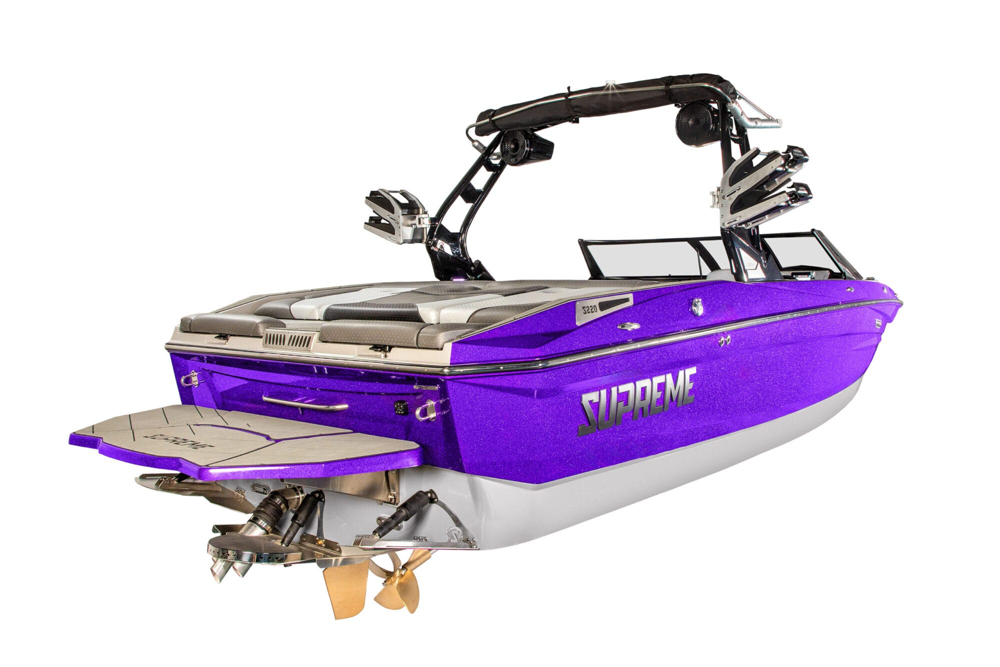

EZ-V Hull
Modified deep-V running surface with 20 degrees of deadrise shapes clean surf waves and a smooth rough-water ride.

Supreme · S Series · Surf, Wake & Ride
Meet your new favourite weekend.
Overview
The S220 is 22 feet of 'let's do that again' — Supreme's most approachable surf boat, built on the modified deep-V EZ-V Hull for clean waves and a smooth ride when the water turns up. It tubes and wakeboards happily, but wake surfing is where it shines.
Up to 4,400 pounds of ballast and the standard Fast Mover Ballast System fill fast, so there's barely a wait before the wave is dialled in. Add the QuickSurf system, Silent Stinger Wake Plate and Wet Sounds audio, pick from seventeen gelcoats, and you have a boat built around your best days.
Best for First-time and weekend surf families wanting a true surf boat without the big-boat price.

Highlights
Modified deep-V running surface with 20 degrees of deadrise shapes clean surf waves and a smooth rough-water ride.
Standard system with 13.5-gallon-per-minute SeaFlo pumps fills up to 4,400 pounds of ballast quickly.
Available surf system works with the ballast to form and switch your wave side in seconds.
An optional wake plate fine-tunes wave shape quietly while you ride.
Touchscreen helm system puts ballast, surf and boat controls together at your fingertips.
The Wet Sounds Back Bone Eco System with Champ speakers turns the ride into a floating concert.
A bold folding tower pairs with the Supreme Sport Shield wingless windshield for style and function.
Choose from seventeen gelcoat colours to customise the look and turn heads at the dock.
Up close


On the water
Specifications
Manufacturer figures — may vary by model year and options. Confirm exact specification with our team.
Keep exploring